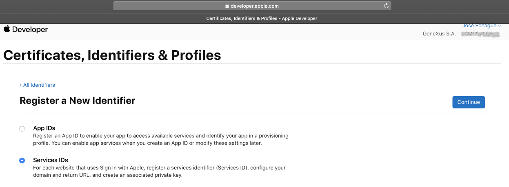

GAM - Apple Authentication type
The Apple Authentication type is supported for all platforms - Web and Mobile (iOS and Android). In this article we explain the steps needed to follow in order to configure your application to login using Apple.
To login with Apple, you need a Smart Devices app generated for iOS, having these properties in the main SD object:
Then, verify the Apple Bundle Identifier property, which in this example is "com.genexus.testAppleSignIn."
The configuration is done in two parts:
Apple backend: Application Registration
On the Apple developer site (To follow this steps you need to be admin or account holder):
- Access Certificate Ids & Profiles through the menu.
Then go to Identifiers and search for the application by filtering through your Apple Bundle Identifier.
Verify that your app is marked as "Enable as primary app Id."
- Create a new identifier of type "Services Id"

- Enter an identifier name that is similar to the "Apple Bundle Identifier" (for easy identification) and a description. Check "Sign In with Apple" and click on the Configure button.
- In the "Primary App Id" combo select your app (check that the Apple "Bundle Identifier" matches yours).

In Domains enter the domain of the application. If the domain was not previously verified for the Apple Development Team, it is necessary to verify it; the instructions to do so are on the same screen (via apple-developer-domain-association.txt file). For more information, see the Apple documentation on this topic.
In callback URL configure the following:
<URLbase>/<web app>/oauth/gam/callback
Next, press Continue. In the screen "Register a services ID" that is displayed, press the Register button.

To verify the process, you can go to the Identifiers option again, filtering by services ID.
- Create and download an Apple private key.
For the menu go to the item Keys.
Give the key a name.
Check Sign In with Apple and click the configure button. In the Configure Key screen, you must select the "Primary App" Id created previously. Click on Save and then Continue.
Click on Register. That leaves the private key available for a one-time download.
Save the "Key ID" of the created key:
- Generate client secrets for the web application (and Android) and the iOS native application using the client_secret.rb program. It is a prerequisite of this step to have the gem "jwt" installed.
To install it, execute the following: gem install jwt.
Complete the fields in the "client_secret.rb" program:
key_file : the path to the private key file that was downloaded from the Apple website. It is recommended to have it in the same directory as the program.
key_id : "Key ID" of the created key. It is obtained from the Apple website (step 5 of this document) or also from the original name of the downloaded private key file.
team_id : ID of the development team (same value as in Development Team ID property)
app_client_id : iOS application bundle identifier (Apple Bundle Identifier property)
server_client_id: bundle identifier of the services ID type created previously (step 3 of this document).
Example:
key_file = 'AuthKey_LAXKCWQ5D7.p8'
key_id = 'LAXKCWQ5D7'
team_id = 'xxxxxxxx'
app_client_id = 'com.genexus.testAppleSignIn'
server_client_id = 'com.genexus.TestAppleSignIn-server'
Execute the program:
ruby client_secret.rb
The output of this step (iOS native token and Web token) will be the client secrets for the authentication types to be used in the GAM backend configuration.
GAM backend
Depending on your app - native iOS or other (web or Android), the configuration of the Apple ID Authentication Type should be different.
Authentication for iOS
This type of authentication has to be used from the iOS app.
Configure the following:
Client ID: the value found at the Apple Bundle Identifier property of the iOS application.
Client Secret: the one generated in the last step (6) with the name of "iOS native token."
The code in GeneXus should be as follows:
Event 'Login Apple'
composite
&LoginExternalAdditionalParameters = new()
&LoginExternalAdditionalParameters.AuthenticationTypeName = !"apple id sd" //here the name of the Authentication Type you've defined.
Actions.LoginExternal(GAMAuthenticationTypes.Apple, !"",!"",&LoginExternalAdditionalParameters)
return
Endcomposite
Endevent
Authentication Type for Web and Android apps
This type of authentication is the one that should be used from an Android app or from Web. It should also be used in iOS for versions older than iOS 13.
Client ID: the bundle identifier of type Services ID created in step 3 above.
Client Secret: The one generated in step 6 above with the name of "Web token."
The login in Android apps is web:
Availability
Since GeneXus 16 upgrade 6
Notes
- It is possible to get the full name and email from a user. However, users can select the option to use a forwarder, instead of their real email.
- If you want the users to be impersonated to the GAM local users, configure GAM Impersonation to local in the GAM Apple Authentication type.
- The information of the user is sent only once for the application and the device. If you are testing and need the information to be sent again, you can go to this link, then to "security," "manage," and in the popup window select your application to stop using Apple ID.
Next, select "stop using Apple ID"
The next time the user logs in will be as the first one.
| Backlinks | |
| Enable Sign in with Apple property | Toc:GeneXus Access Manager (GAM) |
| Integration and Evolution with GeneXus 17 |